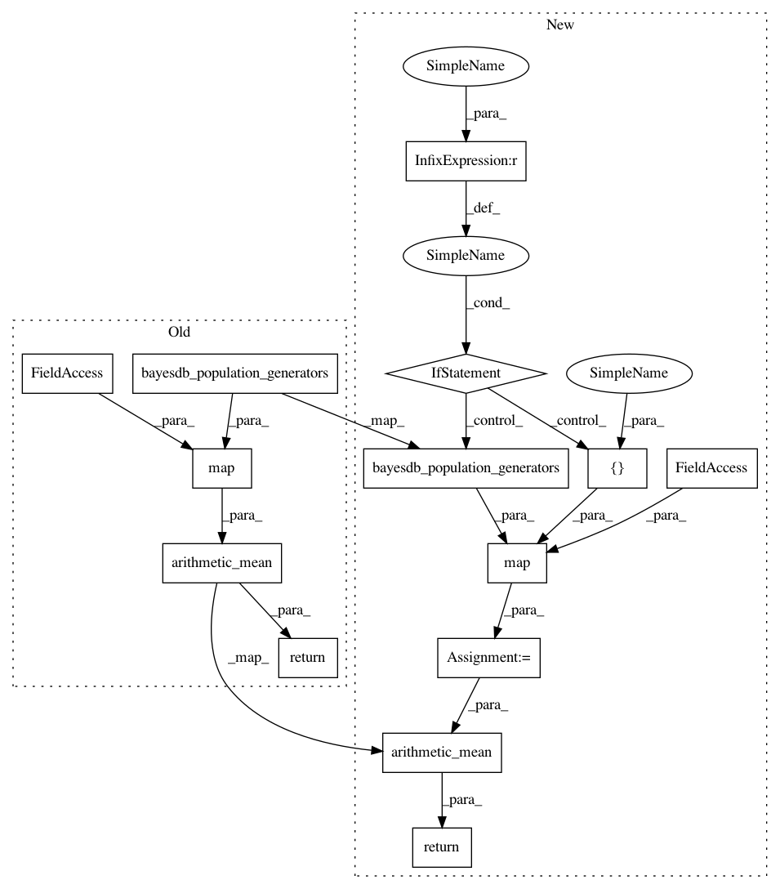

0ae9073fb7b144b8d5793f395f2e3240581eb999,src/bqlfn.py,,bql_row_similarity,#Any#Any#Any#Any#Any#,349
Before Change
metamodel = core.bayesdb_generator_metamodel(bdb, generator_id)
return metamodel.row_similarity(bdb, generator_id, None, rowid,
target_rowid, colnos)
return stats.arithmetic_mean(
map(generator_similarity,
core.bayesdb_population_generators(bdb, population_id)))
// Row function: PREDICTIVE PROBABILITY OF <column>
def bql_row_column_predictive_probability(bdb, population_id, _modelno, rowid,
colno):
After Change
metamodel = core.bayesdb_generator_metamodel(bdb, generator_id)
return metamodel.row_similarity(bdb, generator_id, None, rowid,
target_rowid, colnos)
generator_ids = [generator_id] if generator_id is not None else \
core.bayesdb_population_generators(bdb, population_id)
similarities = map(generator_similarity, generator_ids)
return stats.arithmetic_mean(similarities)
// Row function: PREDICTIVE PROBABILITY OF <column>
def bql_row_column_predictive_probability(bdb, population_id, generator_id,
rowid, colno):
In pattern: SUPERPATTERN
Frequency: 3
Non-data size: 14
Instances
Project Name: probcomp/bayeslite
Commit Name: 0ae9073fb7b144b8d5793f395f2e3240581eb999
Time: 2016-06-29
Author: riastradh+probcomp@csail.mit.edu
File Name: src/bqlfn.py
Class Name:
Method Name: bql_row_similarity
Project Name: probcomp/bayeslite
Commit Name: 0ae9073fb7b144b8d5793f395f2e3240581eb999
Time: 2016-06-29
Author: riastradh+probcomp@csail.mit.edu
File Name: src/bqlfn.py
Class Name:
Method Name: bql_column_dependence_probability
Project Name: probcomp/bayeslite
Commit Name: 0ae9073fb7b144b8d5793f395f2e3240581eb999
Time: 2016-06-29
Author: riastradh+probcomp@csail.mit.edu
File Name: src/bqlfn.py
Class Name:
Method Name: bql_column_mutual_information